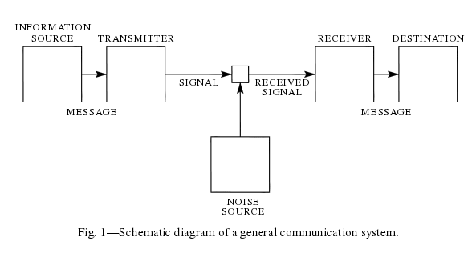
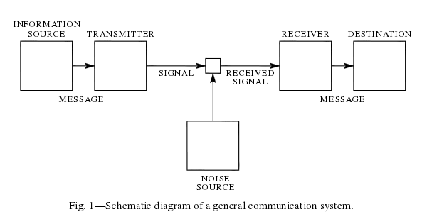

Content¶
There are online lecture notes that compliment notes taken in-class - i.e. these notes.
| Professor: | Fady Alajaji |
|---|---|
| T.A.: | Johnny Ang |
| Website: | www.mast.queensu.ca/~math474 |
| Textbook: | T.M. Cover and J.A. Thomas Elements of Information Theory, Second Edition, John Wiley, 2006 |
There are online lecture notes that compliment notes taken in-class - i.e. these notes.
60%: Final Exam